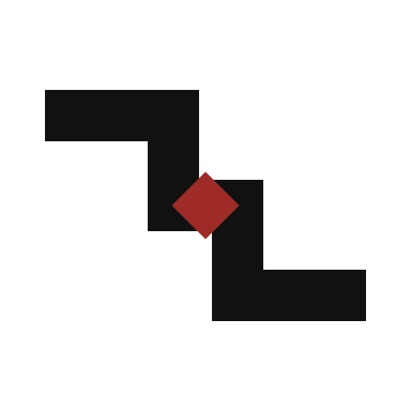

01 / RECOMMENDED
合榫生火
两条路径各自完整，只有角色、边界和时机匹配时才在中心咬合。火种不是装饰，而是协作成立后产生的结果。
64px
32px
16px
正式名称：星火者创业实践共同体｜母题：独立，但不孤立

两条路径各自完整，只有角色、边界和时机匹配时才在中心咬合。火种不是装饰，而是协作成立后产生的结果。
两位实践者沿各自方向继续前进，朱砂连接只代表一次有边界的真实协作。它最准确地表达“独立，但不孤立”。
把“者”做成现代字印，强调星火者首先是一种实践者身份。中文辨识最强，但共同协作的含义需要品牌叙事补足。